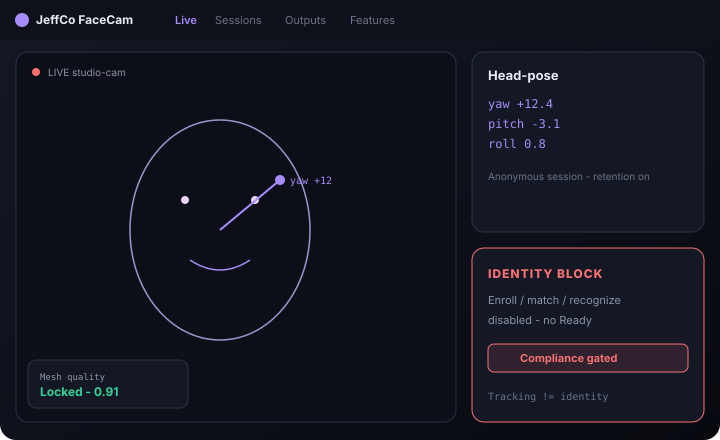
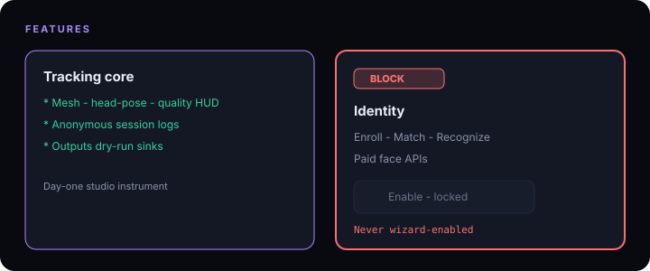
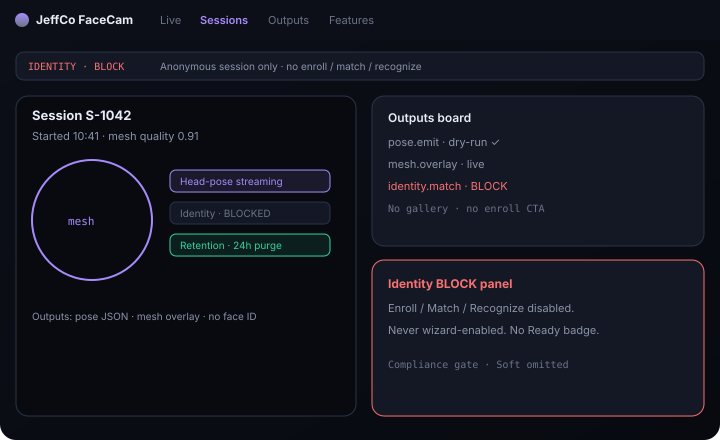
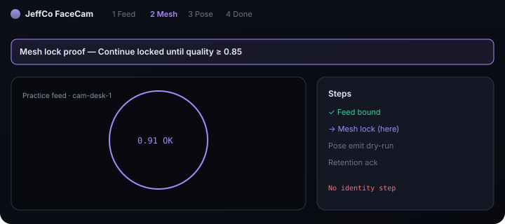

FaceCam
Head/face tracking kit — mesh, head-pose, anonymous session logs — with Identity unmistakably BLOCKED until Compliance.
For AR, controls, gameplay, and analytics builders who need a studio instrument — not an enroll-and-recognize product by default.

What it does
FaceCam is a mocap-style headkit: live mesh overlay, head-pose gizmo, quality HUD, and retention-limited anonymous session logs.
Outputs bind pose and expression proxies to OSC/webhook/game/AR sinks with dry-run. Features split hard: tracking core vs Identity BLOCK panel.
Identity (enroll / match / recognize) and paid face APIs stay Compliance-gated — disabled toggles, BLOCK badges, no Ready, never wizard-enabled.
Unrelated companion/consumer face products are out of scope for this stack.
Capabilities
Day-one surface vs Advanced / gated — from Clarity GH Pages pack.
Day-one surface
Live
Day oneMesh + head-pose overlay + quality HUD
Sessions
Day oneRetention-limited anonymous tracking logs
Outputs
Day onePose/proxy → OSC/webhook/game/AR (dry-run)
Features
Day oneTracking core vs Identity BLOCK panel (visible lock)
Wizard
Day oneFeed → mesh lock proof → pose emit dry-run → retention acknowledgment
Advanced / gated (BLOCK until Compliance)
Identity enroll / match / recognize
BLOCKBLOCK — no Ready state
Paid face APIs
BLOCKSame BLOCK chrome
Long retention / cross-site re-id
GatedCompliance-aligned only
How to use it
First-run (wizard)
Add a feed
Cam / WebXR / device face where available.
Mesh lock proof
Continue locked until quality threshold.
Head-pose dry-run emit
Outputs sink test; nothing identity-related.
Retention / consent
Set windows; acknowledge anonymous logging.
Finish
Identity remains BLOCKED; no enroll step in wizard.
Daily loop
Monitor Live
Mesh quality and pose degrees.
Review Sessions
Within retention; export or purge as policy allows.
Tune Outputs
Dry-run before live sinks.
Open Features
Only to confirm Identity still BLOCKED (don’t “almost enable”).
Activity
Locks, drops, emit fires, retention purges, BLOCK attempts.
Honesty / trust
Clarity FaceCam honesty — Identity BLOCK is the product story.
- Tracking ≠ identity. Day one is anonymous mesh/pose/logging only.
- Identity BLOCK — enroll/match/recognize disabled with BLOCK badges; never default-on; never wizard-enabled.
- No “who is this?” copy or almost-ready identity chrome.
- Retention windows visible; purge honesty in Activity.
- Compliance pack governs any future biometric path — UI must not pretend clearance already landed.
Screenshots
Brochure frames elevated from Design UI mocks.



Get started
Clone jeffco-facecam-module · read docs · open setup wizard.